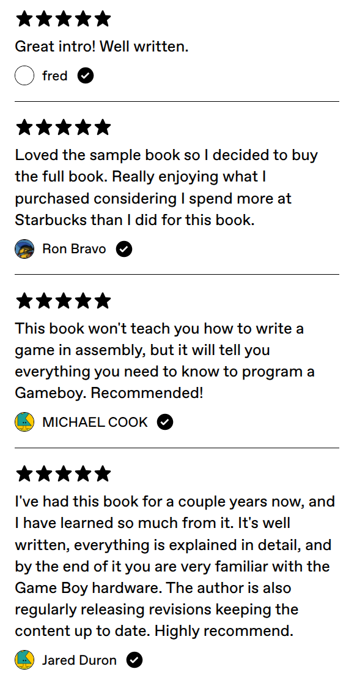
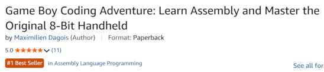

Retrospective on Game Boy Coding Adventure
On January 21st, 2021, I embarked on an epic quest: writing Game Boy Coding Adventure. My goal was to craft a comprehensive, hands-on guide to programming the legendary Game Boy using assembly language, thus demystifying a notoriously tricky subject while keeping it fun and accessible.
Exactly one year later, on January 21st, 2022, the book debuted on Gumroad as a self-published ebook.
Back then, it only covered the original Game Boy, i.e. the classic DMG.
Despite low initial visibility across the vast internet, it managed to find a small, dedicated audience of hardcore Game Boy coders.
Their feedback was incredibly positive, and these early readers became invaluable allies, helping squash bugs and polish overlooked details.

The adventure rapidly expanded. Just five months later, on June 19th, 2022, a major update brought full coverage of the Game Boy Color. By October 13th, 2022, the Game Boy Printer joined the roster. Finally, celebrating its first anniversary on January 21st, 2023, a massive update for the Super Game Boy made the book feature-complete. From then on, it was all about fine-tuning and correcting errors.
Starting in summer 2024, Darren Strash chose the book for his computer architecture students at Hamilton College. This brought me great satisfaction, and it was a true joy to see the student-written Game Boy games, such as Hexbeat, Crypt, and Leap-o-fate.
Ultimately, around 600 readers grabbed the digital version, but clamor for a physical copy grew. Thanks to a tip on Twitter, I reached out to No Starch Press. They responded swiftly, and by July 2023, our collaboration was officially underway. Working with No Starch Press was a masterclass in professionalism. They meticulously reviewed the text, reorganized chapters, and brought in an excellent technical reviewer. The ultimate culmination of this teamwork hit shelves on October 25th, 2025.
Eight months later, the book is still riding high on the momentum of its humble Gumroad beginnings, earning glowing reviews.
Since its release, the physical edition has sold around 2,400 copies, and it even clinched the coveted #1 spot in Amazon's Assembly Language Programming category while maintaining respectable positions in the Game Programming and Introduction & Beginning Programming categories.

Beyond Amazon, Gumroad, and Goodreads, you can find review articles from RetroRGB, Ty Porter, and Gamespot to help you decide if this coding adventure is the right fit for you.
A heartfelt thank you goes out to everyone who supported this project over the years. Writing a book is a monumental test of endurance. Hemingway famously remarked that “the first draft of anything is shit,” and I can attest that the first iteration of Game Boy Coding Adventure was rough around the edges. Jargon appeared before it was explained, the English was clunky, and the sample code was riddled with bugs. Yet, there is a certain magic in dumping everything onto the page first, then rewriting ad nauseam. It’s a grueling process, but hearing from passionate readers makes every drop of sweat entirely worth it.